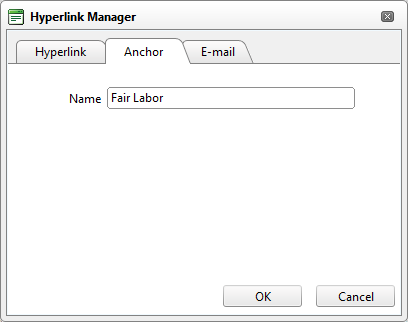

Adding an Anchor
How to create an anchor using the DotNetNuke.RadEditorProvider for the RTE. An anchor is a location within this content which can be linked to using the Hyperlink Manager. Note: Links to this anchor can only be created in this instance of this module.
- Place your cursor where you want to insert the anchor - OR - Highlight the text or object for the anchor. Note: Text may display link formatting even though there is no link.
- Click the Hyperlink Manager (CTRL + K) button. This opens the Hyperlink Manager.
- Select the Anchor tab.
- In the Name text box, enter an anchor name.

-
Click the OK button confirm.